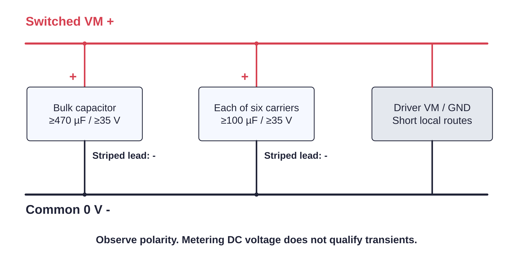

Controller / bypass119 / 179
Fit the local motor capacitors
Local bypass keeps the current path short at each carrier. The bulk capacitor sits at the switched motor distribution.
Add6 × ≥100 µF / ≥35 V · 1 × ≥470 µF / ≥35 V · insulated terminals
Tools / setupBrick unplugged · polarity labels · meter

- Place one local capacitor directly across VM/GND at each carrier.
- Place the bulk capacitor across the switched VM distribution and common 0 V.
- Keep VM/GND routes short and observe the module maker's carrier guidance.
- Meter polarity and absence of a VM-to-GND short after the soldering is inspected.
Ready when
All seven electrolytics have correct polarity and voltage rating, and no exposed lead can touch another net. A reversed capacitor or short fails the power assembly. Disconnect and replace/correct it before plugging in the adapter.